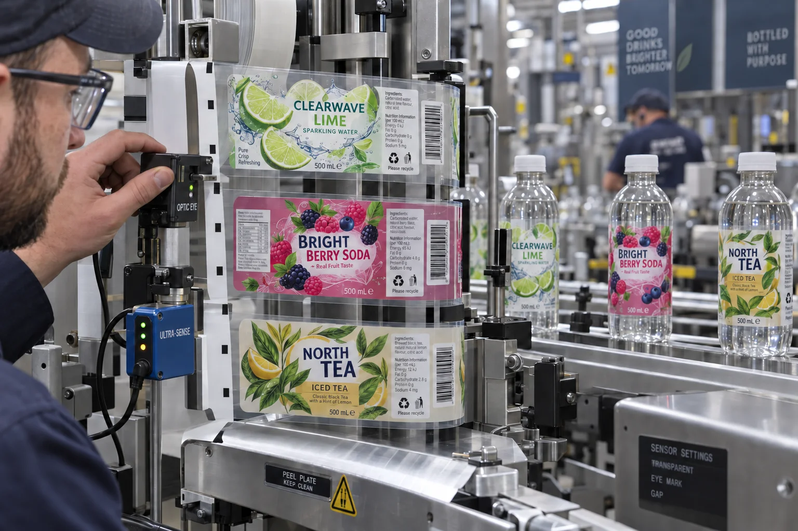

Short answer
Confirm what the applicator detects: the physical gap, an eye mark, label opacity or a material change. Then specify the sensor type, minimum gap, mark position, web path and line speed on the roll drawing. Do not assume a standard optical fork sensor will see a clear label on a clear liner.
The buyer sees a transparent label. The machine sees a signal difference measured in milliseconds. Those are not the same job.
Four common detection strategies
| Method | Works by detecting | Main caution |
|---|---|---|
| Optical gap sensor | Light difference between label and liner | Clear-on-clear contrast may be too weak |
| Ultrasonic fork sensor | Material thickness or acoustic change | Must be mounted and taught correctly |
| Contrast / eye-mark sensor | Printed dark mark against the liner | Mark position and repeat must stay controlled |
| Capacitive sensor | Change in dielectric properties | Material and environmental setup matter |
A composite sparkling-water line
This is a composite planning example. A brand moves from white film to clear labels. The first samples apply by hand and look excellent. On the automatic line, the applicator feeds two labels, stops, then advances half a repeat. Everyone blames roll direction.
I have made that assumption too because unwind errors are visible and common. In this case the roll direction is correct. The old optical sensor is looking through a clear face and clear liner. One SKU happens to run because its white artwork crosses the sensor path; another fails because the artwork is mostly transparent.
The fix is not to add a random white rectangle to every design. The plant chooses a sensor suitable for transparent labels, then we hold the gap and web path within the tested specification.
Gap size is a machine parameter
SICK's registration-sensor overview lists fork sensors designed for opaque, printed and transparent labels, with example minimum detectable gaps around 2 mm for certain models. That is evidence of what specific sensors can do, not a universal 2 mm rule. High speed, unusual die shapes, liner noise and old controls can require more space.
A narrow gap also reduces label material waste, which purchasing likes. But saving one millimeter is false economy if it creates intermittent double feeds. Run the actual label shape and construction at production speed before reducing the approved pitch.
When an eye mark is useful
A dark registration mark can give a contrast sensor a consistent trigger when label opacity varies. The mark must repeat at the correct pitch, stay on the sensor side of the web and avoid trimming or splice areas. Its ink should not transfer, smear or interfere with later recycling claims.
Eye marks also need artwork control. If a designer moves the mark to make the PDF look cleaner, the machine may stop seeing the roll. Treat the mark as production data outside the visual design, with a locked layer and dimension.
Factory-side view
Do not let one successful SKU approve the whole family
A dark berry label may trigger an optical sensor while a light lemon label from the same construction fails.
We test the lowest-contrast artwork, the smallest label and the fastest planned speed. The easiest SKU proves almost nothing.
Sensor-ready roll checklist
- Record sensor manufacturer, model and detection principle.
- Show which side of the web passes through the sensor.
- Specify minimum gap, repeat length and web width.
- Dimension any eye mark from the web edge and label repeat.
- Confirm clear, metallic and heavily printed variants separately.
- Include splice behavior in the line trial.
- Run at production speed and record teach-in settings.
See SICK's official registration sensor overview for examples of optical and ultrasonic label detection. Also confirm label roll direction and leading edge before release.
Frequently asked questions
Why do standard sensors miss clear labels?
A clear label and clear liner may create too little optical contrast at the label edge. A sensor designed for transparent webs, often ultrasonic or capacitive, may be required.
What is a label eye mark?
It is a repeated high-contrast registration mark, commonly printed on the liner or web edge, that a compatible contrast sensor uses to trigger each label position.
How much gap is needed between labels?
It depends on sensor resolution, speed, label shape and machine settings. Some industrial fork sensors can detect very small gaps, but the applicator manufacturer should approve the actual gap.
Can white ink make a clear label easier to detect?
Sometimes an opaque printed area can improve contrast, but relying on artwork coverage is risky because designs change. Confirm the sensing path and test the final construction.
Related label guides
- Minimum Application vs Service Temperature for Labels
- Acrylic vs Rubber Adhesives for Product Labels
- Roll Label Splices: Acceptance and Machine-Run Guide
Review the complete label construction
Send package photos, material details, finished label size, quantity by artwork, storage conditions and application method. We can review fit, material and production details before preparing a quote and digital proof.